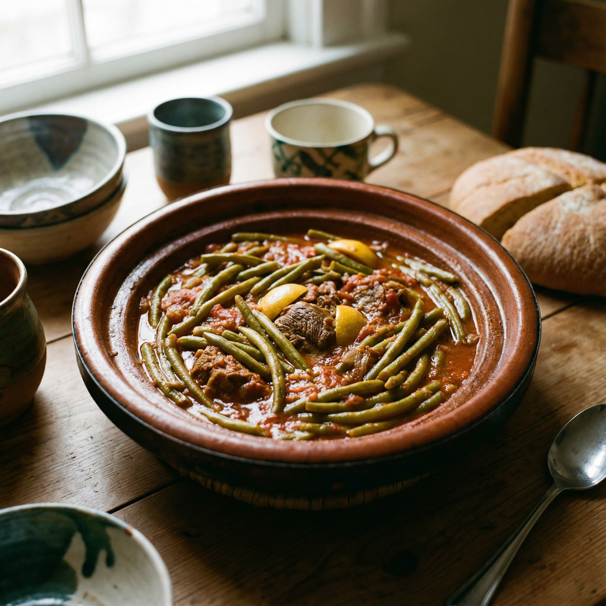

Loubia Khadra
לוביה ח'דרה
38
Loubia Khadra
لوبيا خضراء
תבשיל תוניסאי קלאסי של שעועית ירוקה ברוטב עגבניות עשיר ופיקנטי. השם מגיע מהערבית ('לוביה' לשעועית ו'ח'דרה' לירוקה), והמנה מוגשת באופן מסורתי חמה לצד לחם טרי או קוסקוס.
Un guiso tunecino clásico de judías verdes frescas en una rica salsa de tomate picante. Su nombre proviene del árabe ('Loubia' para judía y 'Khadra' para verde), y se sirve tradicionalmente caliente con pan o cuscús.
مرقة تونسية تقليدية باللوبيا الخضراء في صلصة طماطم عاقدة ومفوّحة. تُقدم عادةً ساخنة مع الخبز الطازج أو الكسكسي، وتتميز بنكهة الثوم والفلفل الأحمر.
A classic Tunisian stew made with fresh green beans in a rich, spicy tomato sauce. Known as 'Loubia Khadra' (Green Bean) in Arabic, it is traditionally served warm as a side dish or main course with fresh bread.
1

2


Ingredientes
- 1 paquete de judías verdes (frescas o congeladas)
- 3 cdas de aceite
- 1 cebolla cortada en cubitos
- 1 cda de pimentón dulce (paprika)
- 1 tomate picado
- 1 guindilla pequeña (cortada)
- 3 dientes de ajo machacados
- 1 lata pequeña de concentrado de tomate
- Sal y pimienta negra
- Sésamo tostado (para decorar)
Instrucciones
- 1.Calentar aceite en una sartén grande y sofreír la cebolla hasta que esté ligeramente dorada.
- 2.Añadir el pimentón, remover y cocinar 2 minutos para liberar los aromas.
- 3.Incorporar el tomate, la guindilla, el ajo, la sal y la pimienta.
- 4.Añadir el concentrado de tomate con un poco de agua y llevar a ebullición.
- 5.Agregar las judías verdes, cocinar unos 10 minutos hasta que estén tiernas y apagar el fuego (opcional: decorar con sésamo).
מצרכים
- 1 חבילת שעועית ירוקה (טרייה או קפואה)
- 3 כפות שמן
- 1 בצל קצוץ לקוביות
- 1 כף פפריקה מתוקה
- 1 עגבניה קצוצה
- 1 פלפל חריף קטן (חתוך)
- 3 שיני שום כתושות
- 1 קופסה קטנה רסק עגבניות
- מלח ופלפל שחור
- שומשום קלוי (להגשה)
הוראות הכנה
- 1.מחממים שמן במחבת גדולה או סיר ומטגנים את הבצל עד להזהבה קלה.
- 2.מוסיפים פפריקה, מערבבים ומטגנים כ-2 דקות לפתיחת טעמים.
- 3.מוסיפים את העגבניה, הפלפל החריף, השום, המלח והפלפל השחור.
- 4.מוסיפים את רסק העגבניות ומעט מים, ומביאים לרתיחה.
- 5.מוסיפים את השעועית הירוקה, מבשלים כ-10 דקות עד לריכוך ומכבים את האש (ניתן לפזר שומשום בהגשה).
3
Ingredients
- 1 package green beans (fresh or frozen)
- 3 tbsp oil
- 1 diced onion
- 1 tbsp sweet paprika
- 1 chopped tomato
- 1 small hot pepper (sliced)
- 3 crushed garlic cloves
- 1 small can tomato paste
- Salt and black pepper
- Toasted sesame (garnish)
Instructions
- 1.Heat oil in a large pan and sauté the onion until lightly golden.
- 2.Add paprika, stir, and cook for 2 minutes to release flavors.
- 3.Add the chopped tomato, hot pepper, garlic, salt, and black pepper.
- 4.Stir in the tomato paste with a little water and bring to a boil.
- 5.Add the green beans, cook for about 10 minutes until tender, and turn off heat (optionally garnish with sesame).
المكونات
- 1 باكو لوبيا خضراء (أو طازجة)
- 3 ملاعق زيت
- 1 بصلة مقصوصة جويدة
- 1 مغرفة فلفل أحمر (بابريكا)
- 1 كعبة طماطم مقصوصة
- طرف فلفل حار
- 3 سنون ثوم مرحي
- 1 حكة طماطم معجونة (صغيرة)
- ملح وفلفل أكحل
- جلجلان مقلي (للزينة)
طريقة التحضير
- 1.سخن الزيت في طنجرة واسعة وقلّي البصل حتى يصفار شوية.
- 2.زيد الفلفل الأحمر، حرّك وقلّيه دقيقتين باش تخرج ريحته.
- 3.ارمي الطماطم الكعب، الفلفل الحار، الثوم، الملح والفلفل الأكحل.
- 4.زيد الطماطم المعجونة وشوية ماء وخلي المرقة تغلي.
- 5.ارمي اللوبيا الخضراء، طيّبها 10 دقايق لين تطيب وتخثار، ورش عليها جلجلان مقلي عند التقديم.
4